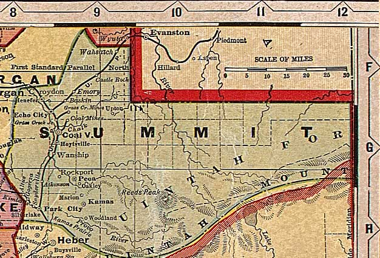

Summit County, Utah, ca. 1908
From "Deseret Evening News New Home Library Wall Chart" (reprinted with permission)
Weber and Rich Counties
Wyoming
All of Utah
Morgan
and
Davis
Counties
Salt
Lake
County

Uinta
County
Wasatch County